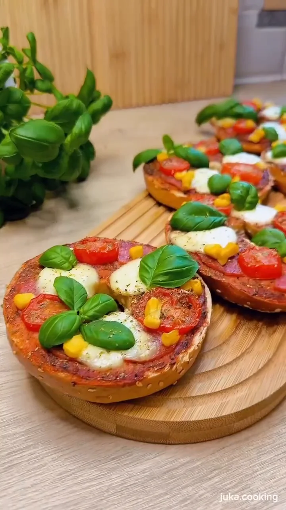

Pizza-Bagels in nur 15 Minuten
Keine Zeit zum Kochen, aber Lust auf Pizza? Dann sind diese knusprigen Pizza-Bagels genau das Richtige! Mit würziger Tomatensauce, geschmolzenem Mozzarella, saftigen Tomaten und knuspriger Salami zauberst du im Handumdrehen einen Snack, der zu jeder Tageszeit passt.
- 8 Stück
- ca. 15 Min.
- 10 Zutaten
- 5 Schritte
Zur Zubereitung Video ansehen ↗
Zutaten
Zubereitung
- Bagels halbieren und die Schnittflächen mit Tomatensauce bestreichen. Mit etwas Thymian würzen.
- Salami, Mini-Mozzarella, Cherrytomaten und Mais gleichmäßig darauf verteilen.
- Mit Oregano und einer Prise Salz abschmecken.
- Im vorgeheizten Backofen bei 180 °C Umluft etwa 15 Minuten backen, bis der Käse herrlich geschmolzen ist.
- Mit frischen Basilikumblättern garnieren und sofort genießen.